Gestión Gerencial · UTN FRSR · TP Final, Parte 3
El guion de la defensa del proyecto completo de Dulxelitos ante el comité de dirección. Está cortado en frases sueltas para decirlo en voz alta, no para leerlo corrido.
Seguir igual cuesta unos $1.570.000 por mes. Poner el stock a la vista cuesta sobre todo tiempo del personal (de caja salen $446.400 en todo el proyecto) y se recupera en 13 meses aun con la mitad de la mejora. Por eso la dirección no decide hoy un gasto grande: aprueba un piloto de 2 semanas con un tope de $712.600, y el resto del proyecto se libera solo si el piloto da Go.
| Lám. | Título | Tiempo | Acumulado |
|---|---|---|---|
| Lo que ya conocen: repaso de las Partes 1 y 2 | |||
| 01 | Portada | 45 s | 0:45 |
| 02 | El problema | 1 min 25 | 2:10 |
| 03 | La propuesta | 1 min 20 | 3:30 |
| 04 | El piloto | 1 min 10 | 4:40 |
| El caso de negocio | |||
| 05 | Lo que cuesta seguir igual | 1 min 20 | 6:00 |
| 06 | Dos escenarios | 1 min 50 | 7:50 |
| 07 | Cuánto se pone y cuándo vuelve | 1 min 30 | 9:20 |
| Plan, gobierno y riesgos | |||
| 08 | Los primeros 30 días | 1 min 25 | 10:45 |
| 09 | Quién decide y cuándo | 1 min 30 | 12:15 |
| 10 | Qué puede salir mal | 1 min 35 | 13:50 |
| Personas y conversación con la dirección | |||
| 11 | Personas y adopción | 1 min 40 | 15:30 |
| 12 | Impactos responsables | 1 min 30 | 17:00 |
| 13 | Lo que puede preguntar la dirección | 1 min 25 | 18:25 |
| Cierre | |||
| 14 | Lo que le pedimos a la dirección | 1 min 25 | 19:50 |
| Total | 19 min 50 | ||
Cómo se cuenta el tiempo. Los tiempos salen de contar las palabras de cada lámina a unas 140 por minuto, un ritmo de exposición, más pausado que una conversación porque hay que señalar la lámina. Las frases marcadas “si hay tiempo” no están en la cuenta y suman alrededor de un minuto. Hablando a 120 palabras por minuto, con las frases “si hay tiempo” incluidas, el texto dura casi 25 minutos: ese es el margen. Puntos de control: la lámina 4 tendría que terminar cerca del minuto 5, la 7 cerca del 9, la 10 cerca del 14 y la 13 cerca del 18. Si el reloj va atrasado, omitir las frases “si hay tiempo” y, en la lámina 6, saltear el detalle del tiempo interno nuevo.
Quién habla. No está asignado: el grupo lo decide después. Conviene que cada integrante tenga un tramo seguido y que los cortes caigan entre los bloques del cuadro.
Las cifras. Las láminas muestran los montos exactos ($342.722 por mes) y el informe los redondea a miles ($343.000). Son los mismos. Todo está en pesos constantes de noviembre de 2026.
En pantalla: el nombre de la empresa, la Parte 3 y los cinco integrantes.
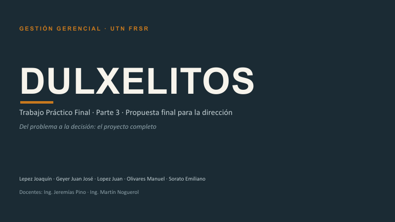
Buenas. Hoy presentamos el proyecto completo de Dulxelitos, de punta a punta, en unos 20 minutos.
Primero repasamos en tres láminas lo que ya conocen: el problema, la propuesta y el piloto. Después viene lo nuevo: lo que cuesta seguir igual, el caso de negocio, el primer mes, quién decide, qué puede salir mal, las personas y, al final, la decisión que le pedimos a la dirección.
Al final hay un pedido concreto, con monto, responsable y fecha. Les pedimos que escuchen como si fueran la dirección de la empresa: lo que sigue está armado para que puedan decidir sin nosotros.
Comenzar despacio y sin leer el orden: son tres frases. La última fija el tono de toda la defensa, porque se habla a una dirección que tiene que decidir. Las láminas 2 a 4 son repaso y no conviene extenderlas: el tiempo está en el caso de negocio.
En pantalla: cuatro números grandes (30 de ~125, 76 % al 90 %, 40 a 50 h, 20 % al 100 %) y abajo, en una franja oscura, lo que mostró el relevamiento.
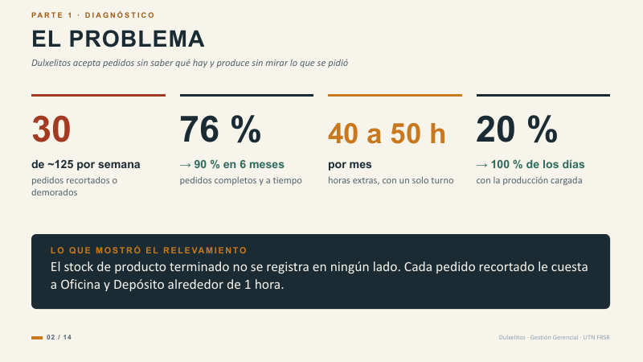
Empezamos por el problema, que ya conocen de la Parte 1. Dulxelitos acepta pedidos sin saber qué hay en stock y produce sin mirar lo que se pidió.
Entran unos 125 pedidos por semana. En la semana que registramos, 30 salieron recortados o demorados: un 76 % de pedidos completos y a tiempo. Es una sola semana, y por eso el plan la vuelve a medir antes de comenzar. La meta es llegar al 90 % en 6 meses.
Las horas extras son entre 40 y 50 por mes, según la liquidación de sueldos. En la Parte 2 habíamos estimado unas 25: se midieron mejor. Y la producción se carga una vez por semana, es decir, un 20 % de los días.
Lo que mostró el relevamiento es que el stock de producto terminado no se registra en ningún lado. Y cada pedido recortado le lleva a Oficina y Depósito alrededor de una hora para avisar, rearmar, facturar y coordinar.
Que el stock no se registre no es un detalle: hoy la disponibilidad se averigua mirando el depósito y preguntando a Producción, y el faltante aparece recién cuando se arma el pedido, cuando ya se confirmó.
Pase: “Veamos qué proponemos para esto.”
El 76 % sale de una sola semana: no presentarlo como promedio. Las horas extras cambiaron respecto de la Parte 2 (de unas 25 a 40 a 50): decirlo de frente, como una medición mejor, antes de que lo pregunten. Y no decir “falta un sistema”: la causa es de registro y de criterio.
No: es el dato de una sola semana (supuesto 9 de la Parte 2). Por eso las semanas 1 a 3 vuelven a medirlo. Si el promedio se aleja más de 5 puntos del 76 %, el hijo responsable se lo informa al dueño en la semana 4 y se revisan las metas.
Es un dato aproximado de la empresa: alrededor de una hora entre Oficina y Depósito para avisar, rearmar, facturar y coordinar, en horario normal. Los tiempos de retrabajo se miden de nuevo en las semanas 1 a 5, con la línea de base y el piloto.
En pantalla: tres cambios en verde, las alternativas A (planilla, primero) y B (Discovery, destino) y la regla del stock disponible.
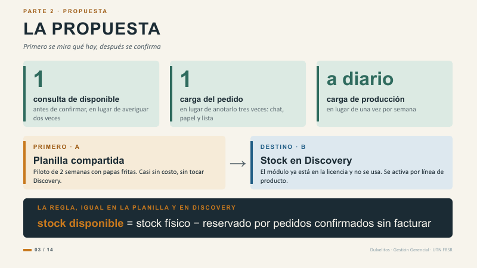
La propuesta, que ya vieron en la Parte 2, cabe en una frase: primero se mira qué hay, después se confirma.
Cambian tres cosas. Una consulta del disponible antes de confirmar, en lugar de averiguar dos veces. Una carga del pedido, en lugar de anotarlo tres veces. Y la producción se carga todos los días, no una vez por semana.
En la Parte 2 evaluamos cuatro alternativas y quedaron dos casi empatadas: una planilla compartida y el módulo de stock de Discovery. Decidió el argumento y no el puntaje.
Por eso hay dos pasos. Primero, la planilla, solo con papas fritas y durante 2 semanas: permite probar, sin gastar, si el equipo sostiene el hábito de cargar. Después, el módulo de stock de Discovery, que ya está en la licencia y la empresa no usa, y es donde ya se factura. Se activa de a una línea de producto.
La regla es la misma en la planilla y en Discovery: el stock disponible es el físico menos lo reservado por pedidos confirmados que todavía no se facturaron.
Pase: “Veamos cómo se prueba, antes de gastar.”
La regla del stock disponible, de memoria. Qué producir lo sigue decidiendo el dueño o uno de los hijos, ahora con pedidos y stock a la vista. Que el módulo esté en la licencia es un dato de la empresa: se confirma por escrito con Buenos Aires Software antes del Go. Es un repaso: no extenderse.
Porque lo primero que hay que saber es si el equipo sostiene la carga diaria. Si no la sostiene en una planilla simple, tampoco la sostendrá en Discovery. Además, el piloto no toca Discovery ni gasta en activación: si los recortes no bajan, no se sigue.
Lo sigue decidiendo quien conoce la planta. Ningún sistema elige qué producir: con el stock y los pedidos en una hoja se decide con más información, y los hijos fijan el stock mínimo de cada producto.
En pantalla: cuatro medidas con su umbral (carga, recortes, conteo, fechas) y abajo tres tarjetas: fechas, tope y semana de decisión.
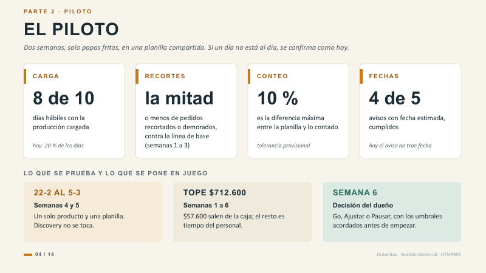
El piloto es el experimento mínimo: dos semanas, un solo producto, papas fritas, en una planilla compartida y sin tocar Discovery. Va del 22 de febrero al 5 de marzo.
Mide cuatro cosas. Que la producción esté cargada en 8 de los 10 días hábiles, cuando hoy lo está el 20 % de los días. Que los pedidos recortados o demorados queden en la mitad o menos de la base. Que la diferencia entre la planilla y lo contado sea de hasta un 10 %. Y que 4 de cada 5 avisos con fecha estimada se cumplan.
Lo que se pone en juego es acotado: un tope de $712.600, de los cuales solo $57.600 salen de la caja. El resto es tiempo de gente que cobra su sueldo igual.
La decisión es en la semana 6 y la toma el dueño: Go, Ajustar o Pausar, con valores que se acuerdan antes de empezar.
Dos semanas con un solo producto dan una señal, no una demostración: no prueban el efecto en todo el catálogo ni la baja de las horas extras.
Pase: “Ahora, cuánto cuesta no hacer nada.”
El tope de $712.600 incluye el tiempo del personal valorado; solo $57.600 son dinero de caja. La base de los recortados es la de papas fritas: sale de las semanas 1 a 3 (línea de base) y no de los 30 de ~125, que son de todos los productos.
Oficina confirma como siempre, a ojo y consultando a Producción, y lo anota. El piloto no toca Discovery ni el armado de pedidos.
Se vuelve atrás sin haber tocado Discovery y el techo no se libera. Con menos de 5 días de 10 con carga es Pausar; con 5 a 7 es Ajustar y se repite, y si al repetir no hay Go, es Pausar.
El dueño, con valores que acuerda o cambia en la semana 1, antes de ver resultados. El Go del piloto exige además que la prueba técnica de Discovery pase y que el recupero con costos reales no supere los 13 meses del conservador.
En pantalla: $1.570.000 por mes en rojo; a la derecha dos barras (tiempo en naranja, dinero en oscuro) y abajo dos franjas.
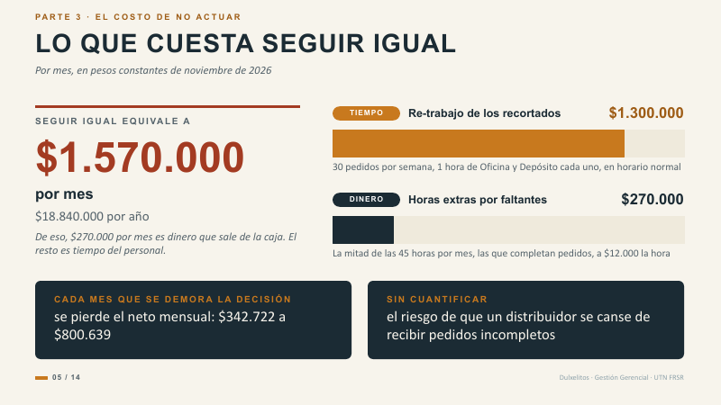
Ahora lo nuevo. Seguir igual equivale a $1.570.000 por mes, unos $18.840.000 por año. Son dos cosas distintas y conviene no mezclarlas.
Lo naranja es tiempo: $1.300.000 por mes. Son unas 130 horas de Oficina y Depósito que se van en rearmar y avisar los 30 pedidos recortados por semana. La empresa las paga igual, porque son sueldos, así que no cambian lo que sale de la caja. Pero esa gente podría estar haciendo otra cosa.
Lo oscuro es dinero: $270.000 por mes de horas extras para completar pedidos. Es la mitad de las 45 horas, a $12.000 cada una, y es lo único que sale de la caja. La otra mitad responde a falta de capacidad y no la contamos.
Esta diferencia entre tiempo y dinero la mantenemos en todo el caso de negocio, con los mismos colores.
Y dos cosas más. Cada mes que se demora la decisión se pierde el neto mensual del proyecto, entre $342.722 y $800.639. Y queda sin cuantificar el riesgo de que un distribuidor se canse de recibir pedidos incompletos.
Pase: “Veamos cuánto cuesta cambiar y cuánto se gana.”
Decir “equivale a”, no “perdemos”. Los colores son los de todo el caso: naranja es tiempo del personal que cobra igual y oscuro es dinero de caja. Las 45 horas son el valor esperado del rango de 40 a 50, y que la mitad se ligue a pedidos faltantes es el supuesto 7 de la Parte 2.
Solo la mitad de las 45 horas se hace para completar pedidos que faltaron (supuesto 7). La otra mitad responde a la falta de capacidad de la planta, que la propuesta no resuelve, y por eso no la contamos.
La hora de retrabajo es un dato aproximado de la empresa, en horario normal, y se valora al costo de la hora de Oficina, $10.000. Si fuera de media hora, el conservador seguiría cerrando: VAN de $1,4 millones y recupero en el mes 22.
En pantalla: dos tarjetas, conservador y esperado, cada una con dos entradas (recortados y horas extras), una barra de beneficio mensual en naranja y oscuro y el neto por mes en verde.
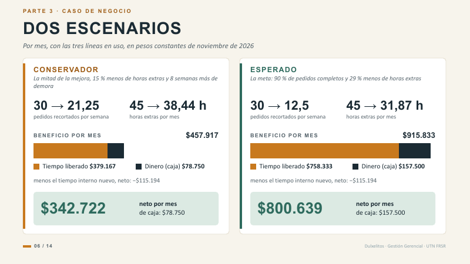
Cuantificamos solo la alternativa elegida: activar el módulo de stock de Discovery, con el piloto antes. No hay licencia ni equipos nuevos: el módulo ya está incluido, las PC ya existen y las horas de Juanjo son las de su servicio contratado. El costo es tiempo del personal.
Armamos dos escenarios, que cambian solo lo más incierto. El conservador supone la mitad de la mejora: los recortados bajan de 30 a unos 21 por semana, las horas extras bajan un 15 % y el efecto tarda 8 semanas más en llegar. El esperado llega a la meta: 90 % de pedidos completos, unos 12 o 13 recortados por semana y un 29 % menos de horas extras.
Miren la barra de cada tarjeta. Lo naranja es tiempo liberado: $379.167 en el conservador y $758.333 en el esperado. Lo oscuro es dinero que deja de salir: $78.750 y $157.500.
A ese beneficio hay que restarle el tiempo interno nuevo, neto de lo que reemplaza: $115.194 por mes. La carga diaria reemplaza el control semanal, y cargar el pedido una vez reemplaza las copias.
El resultado es $342.722 por mes en el conservador y $800.639 en el esperado. Solo en caja, $78.750 y $157.500. Como referencia, alcanza con evitar unos 3 de los 30 recortados por semana para cubrir el tiempo interno nuevo, sin contar las horas extras.
No sumamos el margen de los recortados, porque la venta no se pierde, se manda después. El pedido de aprobación sale del escenario conservador.
Con las tres líneas en uso, las tareas nuevas suman unas 64 horas por mes y reemplazan unas 52: agregan unas 12 horas netas.
Pase: “Veamos cuánto hay que poner y cuándo vuelve.”
Son dos vistas: la completa valora el tiempo al costo de la hora y la de caja cuenta solo horas extras. La baja de horas extras del caso (unas 7 y unas 13 por mes) es más prudente que la meta de la mitad, y es a propósito. El informe redondea a miles: $343.000 y $801.000 de neto, $458.000 y $916.000 de beneficio.
La puesta en marcha de las semanas 1 a 26 es de $1.523.000, y con contingencia llega a $1.752.000 (15 %, esperado) o $1.828.000 (20 %, conservador). Es tiempo del personal. Lo único que sale de la caja son las horas extras de los conteos: $446.400 con la contingencia del conservador. No hay licencias ni equipos.
Es una hipótesis prudente: nadie midió todavía cuánto bajan los recortados. Se mide desde la semana 1 y el Go de cada línea exige que bajen, contra su base.
En pantalla: un gráfico de 18 meses con tres líneas (esperado, conservador y conservador solo caja) y a la derecha las cifras de cada escenario.
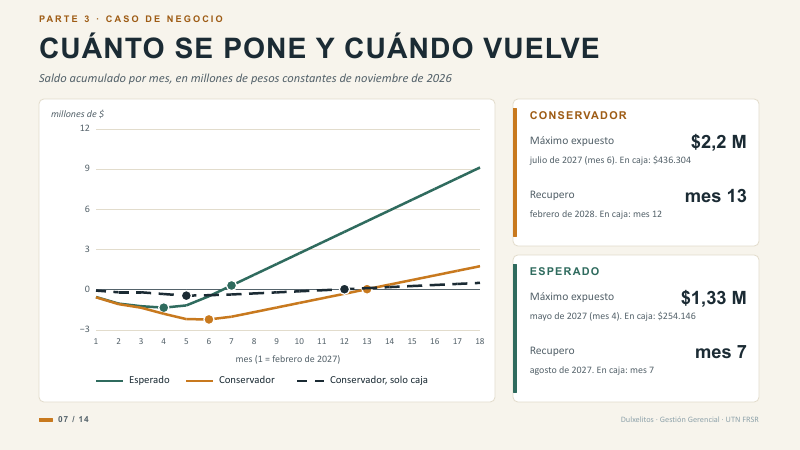
El gráfico muestra el saldo acumulado mes a mes, en millones de pesos. Cuanto más abajo está la línea, más se puso. Cuando cruza el cero, se recuperó lo invertido.
El esperado toca fondo en mayo de 2027, con $1,33 millones puestos, y se recupera en el mes 7, agosto de 2027.
El conservador, que es el que importa para decidir, toca fondo en julio de 2027 con $2,2 millones puestos y se recupera en el mes 13, febrero de 2028. El primer año queda en unos $300.000 por debajo de cero y recién después empieza a dar ganancia.
La línea punteada es solo caja, las horas extras que salen o dejan de salir. Lo máximo expuesto es de $436.304 y se recupera en el mes 12.
Con una tasa del 12 % real anual, el VAN a 3 años es de $6,1 millones en el conservador y de $19,2 millones en el esperado. Dicho simple: conviene, aunque en el conservador tarda un año en devolver lo invertido.
Dos aclaraciones sobre estas cifras. El máximo expuesto incluye el tiempo del personal valorado al costo de la hora, y lo que sale de la caja es bastante menos. Y todo está en pesos constantes de noviembre de 2026.
Los primeros meses concentran la preparación, el piloto, los conteos y el doble registro, y por eso la línea baja al principio.
Pase: “Veamos qué pasa en el primer mes.”
El máximo expuesto es lo más que la empresa llega a poner antes de recuperar, con el tiempo del personal valorado; no es la inversión. Los $1,33 M de la lámina son $1,3 millones en el informe. El gráfico tiene 18 meses: los 12 primeros salen de la planilla y los 6 siguientes siguen con el neto mensual pleno. El 12 % es una decisión nuestra.
Antes de recuperar, el máximo expuesto del conservador es de $2,2 millones, de los cuales $436.304 son dinero de caja; casi todo es tiempo de su gente. Solo en caja también cierra: VAN de $1,5 millones y recupero en el mes 12. Y como se aprueba por tramos, lo que se compromete primero es el tope del piloto, $712.600.
El conservador ya suma 8 semanas de demora. Probamos más variantes sobre él: con retrabajo de media hora, VAN de $1,4 millones (mes 22); con 5 minutos para cargar y reservar, VAN de $1,2 millones (mes 24). Cierra en todas menos en una, que está entre las preguntas difíciles.
En pantalla: cuatro tarjetas, una por semana, con sus tareas y su responsable; la cuarta, oscura, es el comienzo del piloto. Abajo, una franja verde.
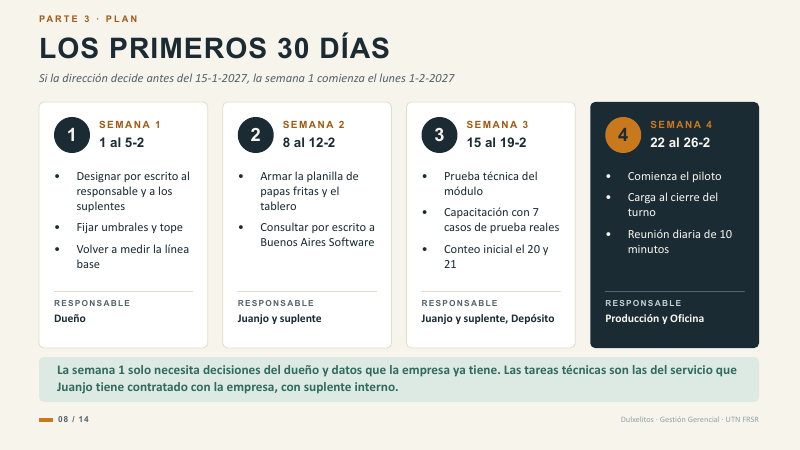
El plan lo lleva adelante la propia empresa. Veamos el primer mes, semana a semana. Si la dirección decide antes del 15 de enero, la semana 1 comienza el lunes 1 de febrero de 2027.
En la semana 1, el dueño designa por escrito al responsable y a los suplentes, fija los umbrales y el tope, y Oficina vuelve a medir la línea de base: cada pedido con su faltante.
En la semana 2, que incluye Carnaval, se arman la planilla de papas fritas y el tablero, y se le consulta por escrito a Buenos Aires Software la versión, el soporte, el plazo y la salida de datos.
En la semana 3 hay prueba técnica, capacitación con siete casos de prueba reales y el conteo inicial el fin de semana, el 20 y el 21.
Y en la semana 4, el 22 de febrero, comienza el piloto: carga diaria al cierre del turno y una reunión de 10 minutos.
La semana 1 solo necesita decisiones del dueño y datos que la empresa ya tiene. Las tareas técnicas son las del servicio que Juanjo tiene contratado, y cada una tiene un suplente interno.
Pase: “Ahora, quién decide y cuándo.”
La fecha límite es el viernes 15-1-2027. El lunes siguiente a la aprobación, el 18-1 como máximo, ya se designa al responsable y se envía la consulta al proveedor, y se piden a liquidación 6 meses de horas extras. La carga diaria es de 14:40 a 15:00, dentro del turno de Producción. El piloto no comienza hasta la semana 4.
El calendario se corre, y cada mes de demora se pierde el neto mensual del proyecto, entre $342.722 y $800.639.
Una reunión semanal de 20 minutos, el tablero de tareas y las decisiones del día a día. Puede no tener tiempo, y por eso el otro hijo revisa con él el tablero cada semana y el dueño acuerda por escrito el tiempo que se le reserva.
Una persona de Oficina que maneja Discovery. Tiene usuario de administrador propio y repite con Juanjo cada tarea técnica durante el piloto.
En pantalla: una línea de tiempo con cinco puntos (semanas 6, 12, 17, 22 y 26), las tres salidas (Go, Ajustar, Pausar) y una franja con los roles.
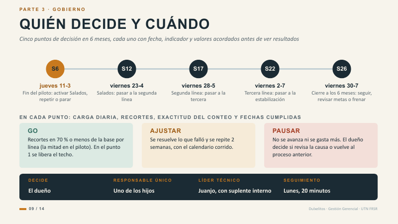
Hay cinco puntos de decisión en 6 meses. En cada uno decide el dueño, con valores que se acuerdan antes de ver los resultados.
El primero, el jueves 11 de marzo, es el grande: termina el piloto y se decide activar la primera línea, Salados, repetir o parar. Con el Go se libera el techo del proyecto. Después hay uno al cerrar cada línea, en las semanas 12, 17 y 22, y uno de cierre a los 6 meses.
En todos se miran las mismas cuatro medidas: la carga diaria, los recortados contra su base, la exactitud del conteo y las fechas cumplidas.
Con Go, sigue el roadmap. Con Ajustar, se resuelve lo que falló y se repite, con el calendario corrido. Con Pausar, no se avanza ni se gasta más, y el dueño decide si revisa la causa o vuelve al proceso anterior.
Para activar cada línea, los recortados tienen que estar en el 70 % o menos de su base; en el piloto, en la mitad o menos.
El responsable único es uno de los hijos, que ya decide la producción y mira los pedidos. Juanjo es el líder técnico, con un suplente interno. Y hay una reunión de 20 minutos los lunes.
Pase: “Veamos qué puede salir mal.”
El umbral de recortados cambia: mitad o menos en el piloto, 70 % o menos en las líneas. Los puntos 2 a 4 exigen además que las horas extras no superen las 45 por mes de hoy, sin las de los conteos iniciales. La lámina no muestra los valores de Ajustar y Pausar, que están en el informe, sección 3.4; los más preguntados van abajo.
Los valores se acuerdan en la semana 1, antes de ver resultados, y los ajustes dentro de lo acordado quedan en el registro. Se miran las mismas cuatro medidas en todos los puntos.
El hijo responsable pausa o activa el plan B el mismo día. Reanudar o avanzar lo decide el dueño: pausar no necesita permiso, avanzar sí.
Porque Juanjo es un servicio externo contratado, no un empleado, y el cambio lo tiene que sostener la empresa. El hijo que se designe ya decide la producción y mira los pedidos; si falta una semana, lo reemplaza el otro hijo.
En pantalla: cuatro riesgos (datos, Juanjo, continuidad, caja), cada uno con su probabilidad e impacto, y a la derecha el plan B en cuatro pasos.
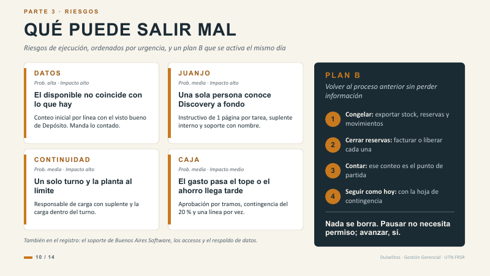
Los riesgos que importan son los de ejecución, porque los supuestos de la Parte 2 ya se prueban en el piloto. Los ordenamos por urgencia. La probabilidad y el impacto son una lectura nuestra, que se revisa en cada punto de decisión.
El primero son los datos: que el disponible no coincida con lo que hay. Se controla con un conteo inicial por línea, con el visto bueno de Depósito, y manda lo contado.
Segundo, la dependencia de Juanjo, que es quien mejor conoce Discovery. Por eso hay un instructivo de una página por tarea técnica, que el suplente interno hace una vez con él mirando, y un contacto de soporte con nombre en Buenos Aires Software.
Tercero, la continuidad: un solo turno y la planta al límite. El responsable de carga tiene suplente y la carga va dentro del turno. Cuarto, la caja: se aprueba por tramos, con una contingencia del 20 %, y una línea por vez.
Y está el plan B, que el responsable declara el mismo día, sin esperar al dueño, porque volver a confirmar como hoy cuesta lo mismo que no haber empezado y se puede deshacer. Se congela con una exportación, se cierran las reservas abiertas, se cuenta y se sigue como hoy. Nada se borra.
En el registro también están el soporte de Buenos Aires Software, los accesos y el respaldo de los datos.
Pase: “Veamos cómo cuidamos a las personas.”
Decir “Juanjo” sin rodeos: integra el grupo, pero sus tareas son las de su servicio contratado con la empresa, que sigue después de este trabajo. La lámina muestra 4 de los 6 riesgos del informe; la franja de abajo nombra los otros. La probabilidad y el impacto son hipótesis nuestras.
Hay dos pasos que no están probados: el reparto parcial y que la factura consuma la reserva. La prueba técnica los revisa antes del Go y se repite tras cada actualización. Si falla, se sigue con la planilla y no se activan más líneas hasta resolverlo.
Se frena la línea siguiente, se recuenta la afectada y Oficina confirma como hoy. Con dos conteos seguidos con menos de 9 de cada 10 productos dentro de la tolerancia de 10 %, se declara el plan B.
Antes del Go se confirma por escrito cómo se exportan el stock y los movimientos. Además hay una exportación semanal, fuera de las PC de la planta, que se prueba en el piloto.
En pantalla: cuatro tarjetas de capacitación (Producción, Oficina, Depósito, Dirección) y, abajo en verde, tres indicadores de adopción.
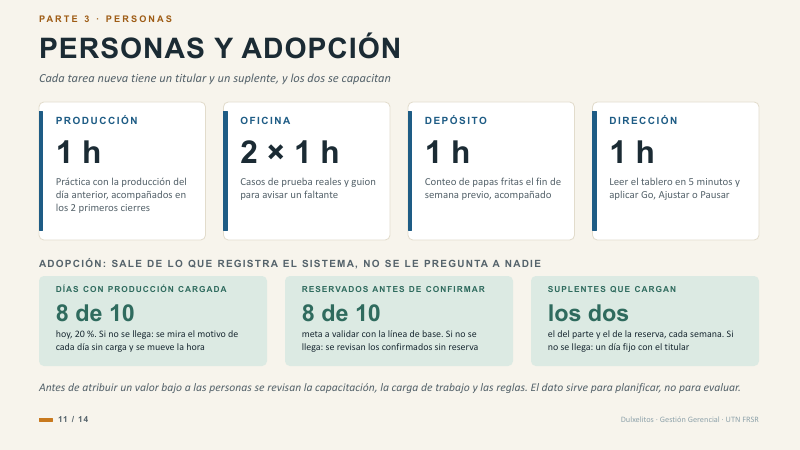
En personas, lo nuevo respecto de la Parte 2 es que las tareas de Juanjo son las de su servicio contratado con la empresa. Configura, prueba, capacita la primera vez y deja instructivos. La rutina la sostiene la empresa, con un hijo como responsable.
La capacitación es en el puesto, por grupo. Producción, una hora de práctica con la producción del día anterior. Oficina, dos sesiones de una hora con los casos de prueba. Depósito, una hora con el conteo inicial de papas fritas. Y la dirección, una hora para leer el tablero y aplicar Go, Ajustar o Pausar.
Cada tarea tiene un titular y un suplente, y los dos se capacitan. Después capacita el hijo responsable o quien esté a cargo de Oficina, para que nada dependa de una persona externa.
La adopción se mide con tres indicadores que salen de lo que registra el sistema: a nadie se le pregunta si lo usa. Los días con producción cargada, hoy en 20 %, con 8 de 10 como meta. Los pedidos reservados antes de confirmar, también 8 de 10. Y que los suplentes carguen, cada semana.
Si un valor es bajo, antes de pensar en las personas se revisan la capacitación, la carga de trabajo y las reglas, en ese orden. El dato sirve para planificar, no para evaluar.
Pase: “Y el impacto de todo esto en la gente.”
El 8 de 10 de “reservados antes de confirmar” es una meta propuesta, a validar con la línea de base de las semanas 1 a 3. Para hablar del miedo al cambio, nombrar lo que cuida cada persona: no tener más trabajo, que el dato no señale a alguien y que no bajen las horas extras, que son ingreso.
La capacitación es en el puesto, con pedidos reales y un instructivo de una página. El parte pide solo producto y cantidad. Quien tenga dificultad entrega el parte en papel y el suplente lo carga, sin que cuente como error.
Se mira el motivo anotado de cada día sin carga (turno apretado, PC ocupada, suplente sin capacitar) y se acorta lo que se carga, siempre dentro del turno. Si la carga genera horas extras, el punto queda en Ajustar.
No. El dueño lo confirma ante todos: el dato sirve para planificar. No se usa para evaluar personas ni para repartir horas extras.
En pantalla: seis tarjetas, la primera destacada (horas extras: de −7 a −13 h por mes) y las otras cinco: cambio de tareas, habilidad digital, papel, privacidad y equipos.
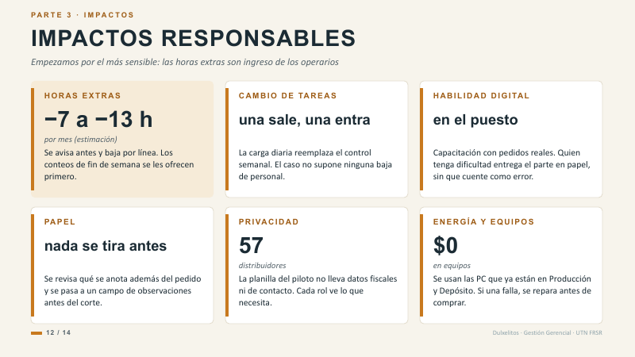
Seis impactos. Empezamos por el más sensible: las horas extras, que para los operarios son ingreso.
Esperamos que bajen unas 7 horas por mes en el conservador y unas 13 en el esperado. Para cuidarlo, se les avisa antes del piloto cuánto se espera que bajen, baja por línea y no de golpe, y solo bajan las que se hacían por pedidos faltantes: las demás rotan entre quienes las hacen hoy. Los conteos de fin de semana, que se pagan como horas extras, se les ofrecen primero.
Segundo, el cambio de tareas: cada tarea nueva reemplaza otra. El caso no supone ninguna baja de personal, y proponemos que el dueño lo diga al presentar el proyecto.
Después vienen la habilidad digital desigual, el papel, la privacidad de los 57 distribuidores y los equipos, que no se compran: se usan las PC que ya están.
Dos cosas quedan sin compensar y las decimos. La baja de horas extras en sí, que es el resultado buscado. Y la energía de las PC, que es un consumo marginal. Si la dirección quiere reconocer ese ingreso de otra forma, es una decisión suya y el caso no la incluye.
Pase: “Estas son las frases que escuchamos en la empresa.”
Conviven dos números de horas extras. La meta del proyecto es la mitad, de 40 a 50 por mes a 20 o 25. La estimación del caso es más prudente: una baja de unas 7 a unas 13 horas. Decirlo con claridad para que no parezca una contradicción. La lámina muestra la estimación.
Sí, en esas horas: se hacían para completar pedidos que faltaron y su baja es el resultado que se busca. Se mitiga con aviso previo, baja por línea y rotación, y los conteos de fin de semana se les ofrecen primero. Reconocer ese ingreso de otra forma queda en manos de la dirección.
El caso no supone ninguna baja de personal. Cada tarea nueva reemplaza otra, y proponemos que el dueño lo diga al presentar el proyecto.
La planilla usa número de pedido, producto y cantidad, sin datos fiscales ni de contacto. La ven con cuenta de la empresa solo Oficina, Producción y el responsable, y al terminar el piloto se archiva y se retira el acceso.
En pantalla: seis objeciones entre comillas, cada una con una respuesta corta.
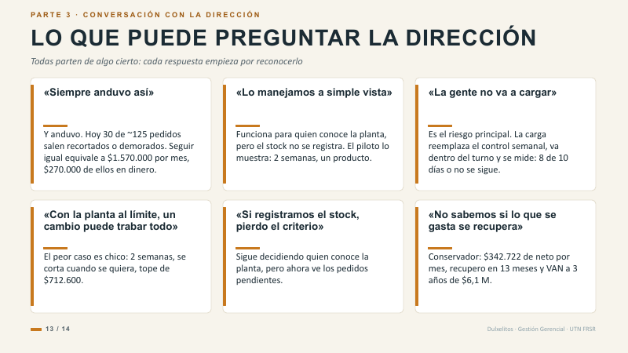
Estas son las frases que se escuchan en la empresa. Todas parten de algo cierto, y cada respuesta empieza por reconocerlo.
“Siempre anduvo así.” Es cierto, y anduvo mientras el volumen se podía seguir de memoria. Hoy 30 de unos 125 pedidos salen recortados o demorados, y seguir igual equivale a $1.570.000 por mes, de los cuales $270.000 son dinero.
“La gente no va a cargar.” Tiene razón en que una planta sin margen no suma tareas sola. Por eso la carga reemplaza el control semanal, va dentro del turno, tiene suplente y es condición para el Go: 8 de 10 días, o no se sigue.
“No sabemos si lo que se gasta se recupera.” En el conservador, $342.722 de neto por mes, recupero en 13 meses y VAN a 3 años de $6,1 millones. Por eso el pedido es acotado.
“Lo manejamos a simple vista.” Funciona para quien conoce la planta, y ese conocimiento no se descarta. Pero el stock no se registra y el faltante aparece recién al armar el pedido. Si a simple vista alcanzaba, el piloto lo va a mostrar: 2 semanas, un solo producto.
“Con la planta al límite, un cambio puede trabar todo”: el peor caso es chico, 2 semanas, y se corta cuando se quiera. “Si registramos el stock, pierdo el criterio”: sigue decidiendo quien conoce la planta, ahora con los pedidos a la vista.
Pase: “Resumimos lo que le pedimos a la dirección.”
No leer las seis: decir las cuatro del guion y señalar que las otras dos están en la lámina. Esta lámina anticipa lo que probablemente se pregunte, así que conviene hablar sin apuro y dejar el tiempo previsto. Las objeciones salen del relevamiento con el responsable de sistemas y de las entrevistas de la Parte 1.
No se avanza ni se gasta más, y la operación vuelve a confirmar pedidos como hoy sin perder información: se congela con una exportación, se cierran las reservas, se cuenta y se sigue. A las 4 semanas el dueño decide entre revisar la causa o volver al proceso anterior.
Todavía no hay evidencia, y por eso el piloto es con planilla: hoy la producción se carga una vez por semana, un 20 % de los días. El piloto mide si se llega a 8 de 10; con 5 a 7 se ajusta y con menos de 5 se pausa.
En pantalla, sobre fondo oscuro: cuatro compromisos (tope, techo, responsable, fecha) y una franja verde con el escenario conservador.
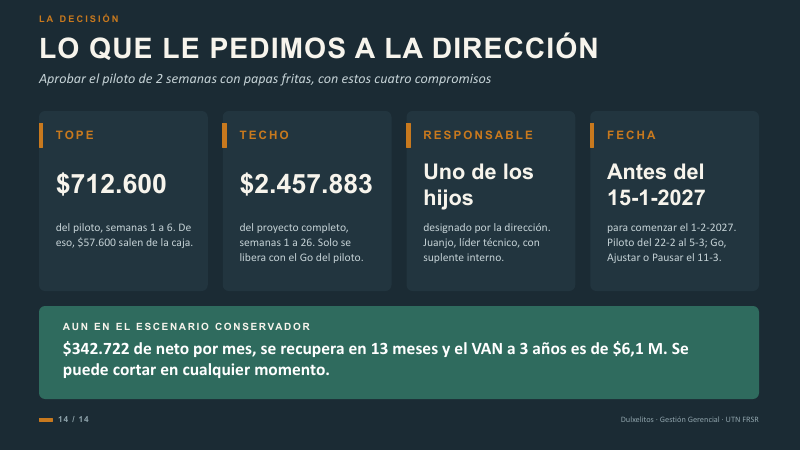
Lo que le pedimos a la dirección es acotado: aprobar el piloto de 2 semanas con papas fritas, con cuatro compromisos.
Primero, el tope: $712.600 para el piloto, las semanas 1 a 6. De eso, $57.600 salen de la caja. Si el piloto no da, se vuelve atrás sin haber tocado Discovery.
Segundo, el techo: $2.457.883 para el proyecto completo, las semanas 1 a 26, sin restar beneficios. De eso, $446.400 son caja. Se libera solo con el Go de la semana 6.
Tercero, el responsable: que la dirección designe a uno de los hijos como responsable único, con Juanjo como líder técnico y un suplente interno.
Cuarto, la fecha: la decisión, antes del 15 de enero de 2027, para comenzar el lunes 1 de febrero. El piloto es del 22 de febrero al 5 de marzo, y el Go, Ajustar o Pausar, el jueves 11 de marzo.
Aun en el escenario conservador, el proyecto deja $342.722 por mes, se recupera en 13 meses y el VAN a 3 años es de $6,1 millones. Y se puede cortar en cualquier momento: pausar no necesita permiso, avanzar sí.
Pausa de un segundo antes de la última frase. Después, una sola línea de cierre y pasar a las preguntas.
Eso es lo que necesitamos que decidan. Quedamos a disposición para las preguntas. Gracias.
No apurar el final y no agregar cifras nuevas. Si piden un resumen de una línea: tope, techo, responsable y fecha. No cerrar con “bueno, eso sería todo”: la última idea que queda es que lo que se pide hoy es chico y se puede cortar.
Porque el techo es la puesta en marcha completa con 20 % de contingencia, $1,83 millones, más $630.000 del tiempo interno recurrente de las semanas 4 a 26, a medida que cada línea queda en uso. No resta beneficios.
No hay licencias, equipos ni servicios nuevos. Si Buenos Aires Software informara algún costo (usuarios nuevos o ambiente de prueba, por ejemplo), se suma a la planilla y se revisa el caso antes de activar. Nada se gasta sobre el tope sin el dueño.
Aprobar el piloto con su tope ya alcanza para comenzar. El techo no se libera sin el Go de la semana 6, así que la dirección puede decidir en dos tramos.
Las siete que más conviene tener ensayadas, con la respuesta corta. Todas las cifras son las del informe.
Porque casi todo el costo y buena parte del beneficio son horas de gente que cobra igual: si solo se contara la caja, habría que ignorar también el costo en tiempo ($115.194 por mes de tiempo interno nuevo). Por eso mostramos dos vistas. La completa valora el tiempo al costo de la hora y la de caja cuenta solo horas extras, y el conservador cierra en las dos: VAN de $6,1 millones y recupero en 13 meses en la completa; VAN de $1,5 millones y recupero en 12 en caja. La empresa no paga menos, pero recupera tiempo para otras tareas sin contratar, y el caso no supone ninguna baja de personal.
Es alta porque lo que se pone al principio es chico frente a lo que vuelve: la TIR mensual es de 10 % en el conservador y de 28 % en el esperado, y la anual supera el 200 % en el conservador. Por eso no decidimos con la TIR sino con el máximo expuesto ($2,2 millones en el conservador), el recupero (13 meses) y el VAN ($6,1 millones). Como referencia, alcanza con evitar unos 3 recortes por semana para cubrir el tiempo interno nuevo, sin contar las horas extras.
Es cierto que integra el grupo, pero sus tareas en el plan son las de su servicio contratado con la empresa, que sigue después de este trabajo, y sus horas ya están en lo que cobra. Para no depender de una sola persona hay un suplente interno (de Oficina, con usuario de administrador propio, que repite con él cada tarea técnica durante el piloto), un instructivo de una página por tarea y un contacto de soporte con nombre en Buenos Aires Software. Si el servicio termina, lo reemplazan el suplente interno y Buenos Aires Software; si no responde en un día hábil se pasa al siguiente de la cadena, y pasados 5 días hábiles se activa el plan B. Si sus 47 horas se valoraran a $10.000, el VAN conservador sería de $5,7 millones, con recupero en el mes 15.
Porque el módulo de stock ya está en la licencia, sin costo de activación ni de soporte (se confirma por escrito antes del Go): no se contrata nada y el costo es tiempo del personal. En la Parte 2 el sistema en la nube sumó 20 puntos sobre 50 y se descartó por la cuota nueva, la migración y la doble carga. Y no resuelve lo central: si el equipo no sostiene la carga en una planilla simple, tampoco la sostendrá en un sistema más grande, y por eso el piloto es con planilla.
Es el único caso que no cierra. Si la carga diaria y la reunión de Producción se pagaran como horas extras ($130.000 por mes), el conservador en caja da un VAN de −$2 millones: el costo supera el ahorro de $78.750 por mes. La vista completa no cambia, y en el esperado apenas cierra (VAN de $218.976, recupero en 24 meses). Por eso la carga, de 14:40 a 15:00, y la reunión van dentro del turno; si la carga genera horas extras el punto queda en Ajustar, y no se activa otra línea si las horas extras pasan de las 45 por mes de hoy, sin contar las de los conteos iniciales.
Porque el caso es más prudente que la meta. Solo la mitad de las 45 horas se hace para completar pedidos que faltaron (supuesto 7), y suponemos que esa mitad baja en la misma proporción que los recortados: unas 13 horas por mes en el esperado y unas 6,6 en el conservador. La otra mitad es capacidad y no la contamos. La meta, de 20 a 25 horas por mes, se mide en los puntos de decisión pero no sostiene el caso: si se cumpliera, el VAN conservador subiría a $10,9 millones, con recupero en el mes 11.
Se midió mejor: según la liquidación de sueldos son entre 40 y 50 por mes (dato; usamos 45), no unas 25. La meta pasa a ser la mitad, de 20 a 25 por mes en vez de 12 o 13, pero el beneficio del caso no se apoya en ese número: usa solo la baja ligada a los pedidos faltantes, unas 7 a 13 horas. Y apenas aprobado el proyecto se piden a liquidación 6 meses de horas extras para fijar la base con datos propios.